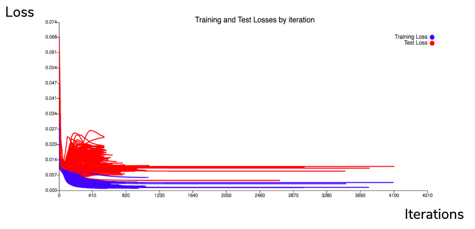

Model Training
Final parameters for Nerual Network model
- 4-layer network, with a two-third reduction in size from layer to layer
- 64 neurons for topmost layer
- 10,000 iterations for training
- Adam optimisation algorithm
- 20 repeats for each training run
Training and Test Losses

Best Test Loss obtained: 0.00454
Persistence Model Loss: 0.0157